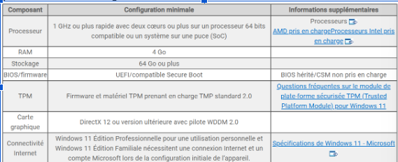
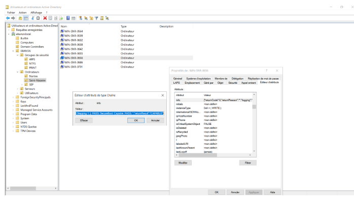
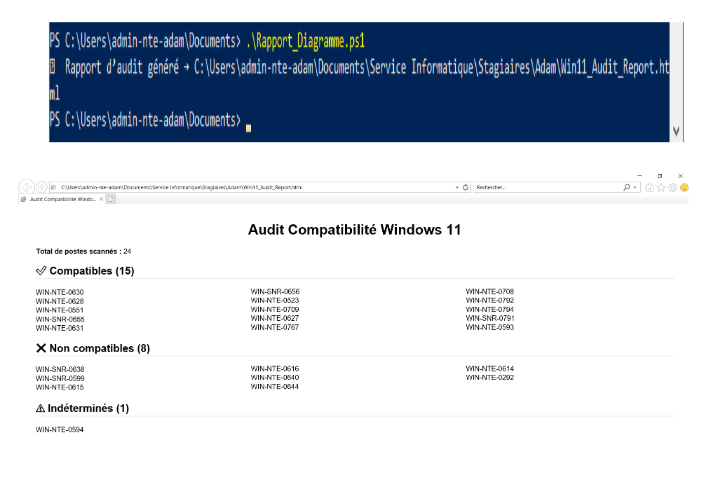
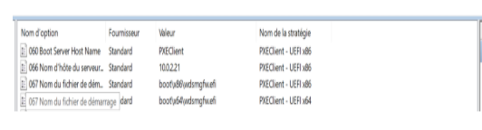
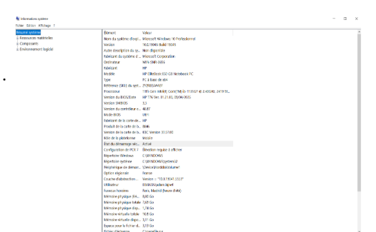

Stage de 1re année - École des Beaux-Arts Nantes Saint-Nazaire
Ce stage m’a permis de découvrir l’organisation d’une infrastructure réseau en production et de participer à un projet d’audit et de déploiement Windows 11.
Étude de l’infrastructure
- Découverte de la topologie réseau de l’établissement
- Étude de l’adressage IP, des routeurs et des commutateurs
- Identification des pare-feu, serveurs et bornes Wi-Fi
- Travail sur les services DHCP, DNS, Active Directory et VPN
Audit de compatibilité Windows 11
- Audit de compatibilité Windows 11 du parc informatique
- Utilisation d’un script PowerShell Microsoft pour analyser les postes
- Exploitation de résultats au format JSON
- Interprétation des codes : 0 compatible, 1 non compatible, -1 indéterminé, -2 erreur
- Écriture des résultats dans l’attribut INFO des objets ordinateurs dans Active Directory
- Automatisation de l’exécution avec une GPO
- Génération d’un rapport d’audit des PC compatibles, non compatibles et indéterminés
Déploiement et automatisation
- Travail sur WDS, MDT, PXE et les options DHCP 066 et 067
- Création d’une clé USB bootable MDT
- Capture d’une image Windows 11 personnalisée
- Utilisation de Sysprep pour généraliser l’image
- Injection de pilotes dans MDT
- Tests de déploiement sur plusieurs modèles de matériel
- Création d’un package WAPT pour déployer des raccourcis et outils bureautiques
Preuves techniques
Ces captures viendront illustrer les éléments techniques réalisés pendant le stage : audit Windows 11, exploitation des résultats dans Active Directory et préparation du déploiement avec WDS/MDT.

Critères matériels Windows 11
Critères matériels Windows 11.

Attribut INFO dans Active Directory
Attribut INFO dans Active Directory contenant les résultats du script PowerShell.

Rapport d’audit Windows 11
Rapport d’audit automatique des postes compatibles Windows 11.

Options DHCP PXE pour WDS/MDT
Configuration des options DHCP PXE pour WDS/MDT.

Vérification Secure Boot avec msinfo32
Vérification du Secure Boot et des informations système avec msinfo32.